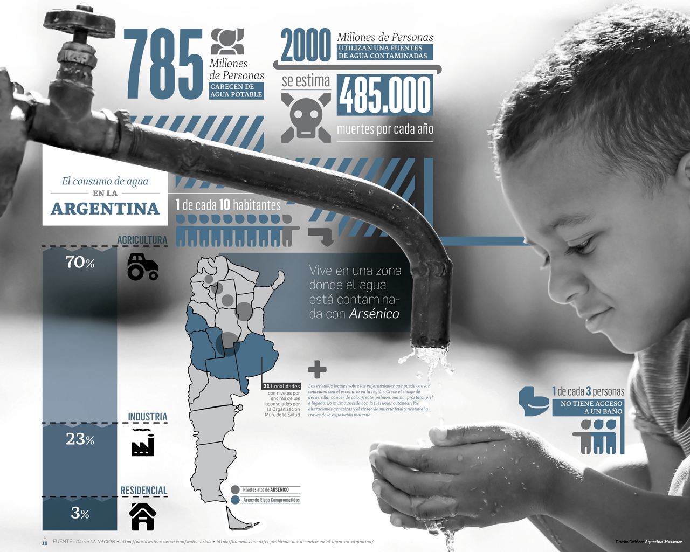

Agua potable
Hechos clave
- En 2017, el 71% de la población mundial (5.300 millones de personas) utilizó un servicio de agua potable gestionado de forma segura, es decir, uno ubicado en las instalaciones, disponible cuando fuera necesario y libre de contaminación.
- El 90% de la población mundial (6.800 millones de personas) utilizó al menos un servicio básico. Un servicio básico es una fuente mejorada de agua potable en un viaje de ida y vuelta de 30 minutos para recolectar agua.
- 785 millones de personas carecen incluso de un servicio básico de agua potable, incluidos 144 millones de personas que dependen del agua superficial.
- A nivel mundial, al menos 2 mil millones de personas utilizan una fuente de agua potable contaminada con heces.
- El agua contaminada puede transmitir enfermedades como la diarrea, el cólera, la disentería, la fiebre tifoidea y la poliomielitis. Se estima que el agua potable contaminada causa 485 000 muertes por diarrea cada año.
- Para 2025, la mitad de la población mundial vivirá en zonas con escasez de agua.
- En los países menos desarrollados, el 22% de los establecimientos de salud no tiene servicio de agua, el 21% no tiene servicio de saneamiento y el 22% no tiene servicio de gestión de residuos.

Introducción
El agua potable y de fácil acceso es importante para la salud pública, ya sea que se utilice para beber, para uso doméstico, para la producción de alimentos o para fines recreativos. Un mejor suministro de agua y saneamiento, y una mejor gestión de los recursos hídricos, pueden impulsar el crecimiento económico de los países y pueden contribuir en gran medida a la reducción de la pobreza.
En 2010, la Asamblea General de la ONU reconoció explícitamente el derecho humano al agua y al saneamiento. Todos tienen derecho a agua suficiente, continua, segura, aceptable, físicamente accesible y asequible para uso personal y doméstico.